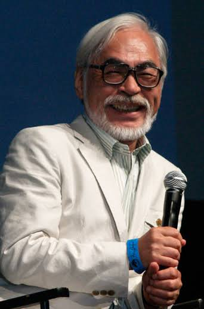

Who is Hayao Miyazaki?
Animator, Film Director, Manga Artist, and Co-Founder of Studio Ghibli

Miyazaki was born on January 7, 1941, in Tokyo, Japan and passed away on March 9, 2018. Growing up around that time, he was influenced a lot by war. This is why a lot of the themes in his films reflect that.
His skills in the arts come from his early interest in manga and anime. He started in the industry as an animator doing inbetweens and keyframes. Later, he became a director and co-founder of Studio Ghibli beginning with Nausicaä of the Valley of the Wind.